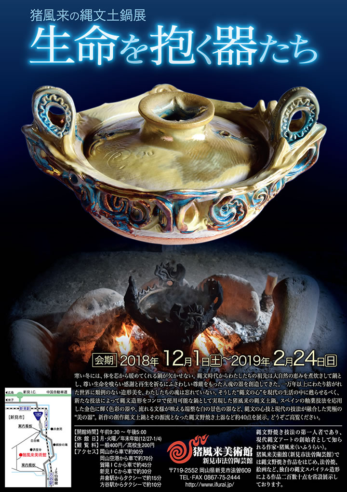

|  |
| 【猪風来の縄文土鍋展‐生命を抱く器たち‐チラシ】 →PDF版を開く |
寒い冬には、体を芯から暖めてくれる鍋が欠かせない。
縄文時代からわたしたちの祖先は大自然の恵みを煮炊きして鍋とし、尊い生命を喰らい感謝と再生を祈るに
ふさわしい尊厳をもった入魂の器を創造してきた。
一万年以上にわたり紡がれた世界に類例のない造形美を、わたしたちの魂は忘れていない。
そうした“縄文の心”を現代の生活の中に甦らせるべく、新たな技法によって縄文造形をコンロで使用可能な鍋
として実現した猪風来の縄文土鍋。
スペインの釉薬技法を応用した金色に輝く色彩の器や、流れる文様が映える端整な白の景色の器など、縄文の
心技と現代の技法が融合した究極の“美の器”。
新作の創作縄文土鍋とその源流となった縄文野焼き土器など約40点を展示。
どうぞご高覧ください。